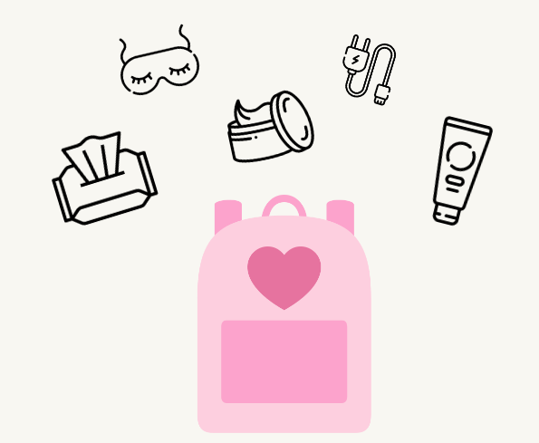

Non-negotiable travel essentials
Your must-haves when it comes to trips
CARRY ON ESSENTIALS
1. Moisturizing makeup wipes – Find your brand and never forget to bring this little thingie with you on your future flighs. Thank me later.
2. Sleep mask – completely blocks out light and super comfy to wear.
3. Bose noise canceling headphones — there’s a reason these are the #1 on the market. They’re comfortable, practical as hell, and sound amazing in addition to blocking out screaming babies, snorers, etc.
4. Luxtude gold portable phone charger – seriously compact, stylish, and quick juice for your phone. Expect a full charge in under half an hour!

5. Universal adapter – because there’s nothing worse than getting to a foreign country and realising you have the wrong god damn plugs.
6. Packing cubes – an absolute GAME CHANGER. They help you fit more clothing into your bag than you could have imagined possible. They’re also cheap and sturdy af – I’ve been using this set for over a year and they’re still in perfect condition
7. Compression socks – not very glamorous, but hear me out. These will change your life, they seriously help so much with your circulation and reduce swelling and stiffness in your legs when flying.
8. Kindle – after one too many trips carrying heavy books around, I made the switch and never looked back. Even for avid readers and real-book-lovers, this is just way more practical for travel.
9. Neck pillow – essential for any flight where you’d like to relax at ALL. I’ve been using this one for a year+ also and it’s still like new! I like this one because it’s adjustable, unlike other bulky pillows.
10. Stainless steel water bottle – in cute af millennial pink, of course. Gotta stay hydrated, yo. I fill up after security and take a full bottle on the plane with me!